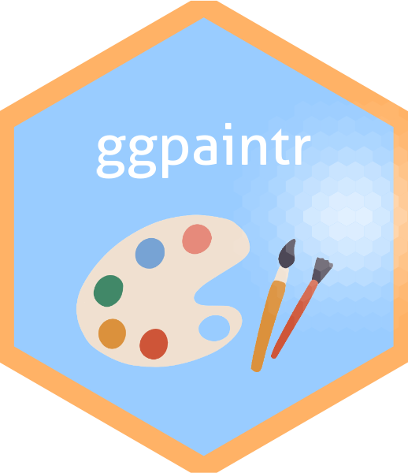

Generate plot and the corresponding code of
Generate plot and the corresponding code of ggplot2 from a paintr_obj
paintr_plot_code.RdGenerate plot and the corresponding code of ggplot2 from a paintr_obj
Usage
paintr_plot_code(
paintr_obj,
data_filter = "",
selected_color_rctv = NULL,
selected_fill_rctv = NULL,
color_fill = FALSE,
color_group = FALSE,
userFUN = NULL,
...
)Arguments
- paintr_obj
a
paintr_obj- data_filter
data filtering code
- selected_color_rctv
reactive value returned by
scaleColor_build_reactivityfor color- selected_fill_rctv
reactive value returned by
scaleColor_build_reactivityfor fill- color_fill
bool; optional. Whether or not to use the same variable for both color and fill
- color_group
bool; optional. Whether or not to use the same variable for both color and group
- userFUN
a function that returns a named list, where the names of this named list are parameters (except for
mapping) ofgeom_<chart>, and the elements of this list are arguments of the corresponding parameters- ...
arguments that go into
userFUN
Note
this function should be called inside observeEvent() since the isolate() scope provided
by observeEvent() is essential.